→ results
I know many of you have been waiting for this, so without any other fuss:
Congratulations to Tonic for winning the #demoscene 4k source compo 2004! With a staggering 72 points the competition doesn't even come close :)
→ 1st place
So, first place with 72 points goes to:
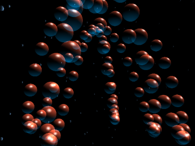
tonic - shadow sun
→ 2nd place
On second place, amazingly Tharsis and Acetate both got 39 points for their entries:
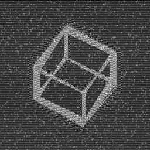
acetate - analeptique
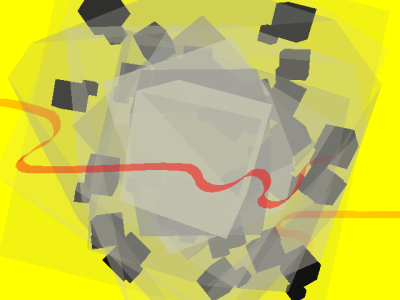
tharsis - fab
→ Almost 3rd place
With 35 points, Mooz got very close to those on second place, so I award him with Almost Third Place:
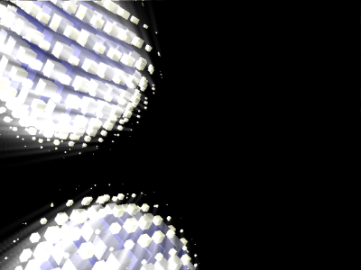
mooz - cube
→ Runners up
Some of the remaining entries are also very nice, i'm sure you will enjoy watching these.
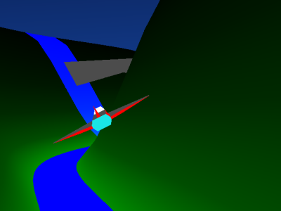
cypou & drizzt - canyonflight (26 points)
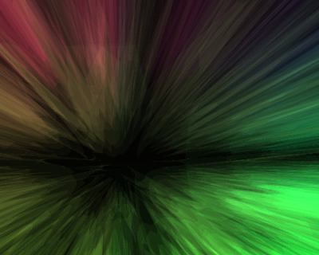
skypher - spazmo-qore (24 points)
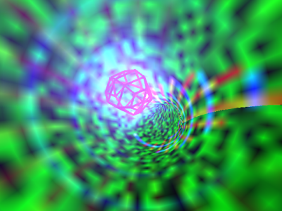
mad martigan - 4ksdemo (22 points)
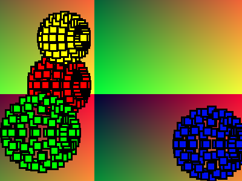
pirro - unnamed (16 points)
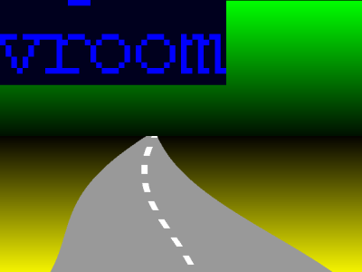
jylam - history of video game in 4k (12 points)
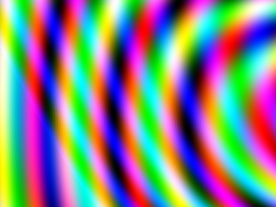
chazal francois - wave traveler (3 points)
→ Disqualified
Sadly, this year i had to disqualify two entries because a tiny portability issue wasn't addressed before the deadline, but they are included in the release pack for your enjoyment :)
julien rebetez - silver
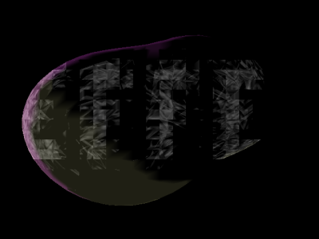
lordcow - buggy metaballs